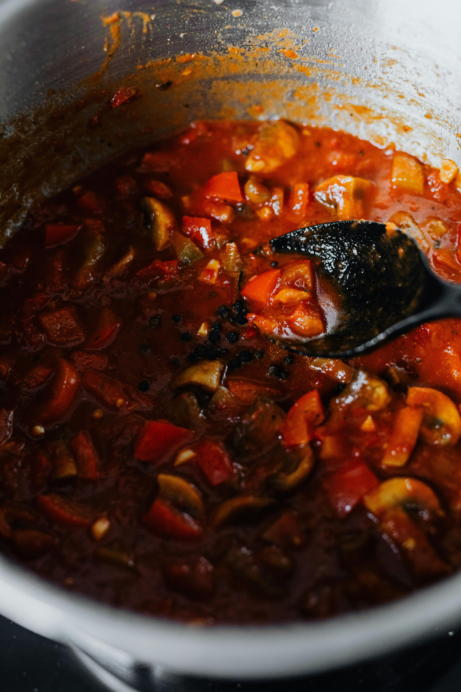
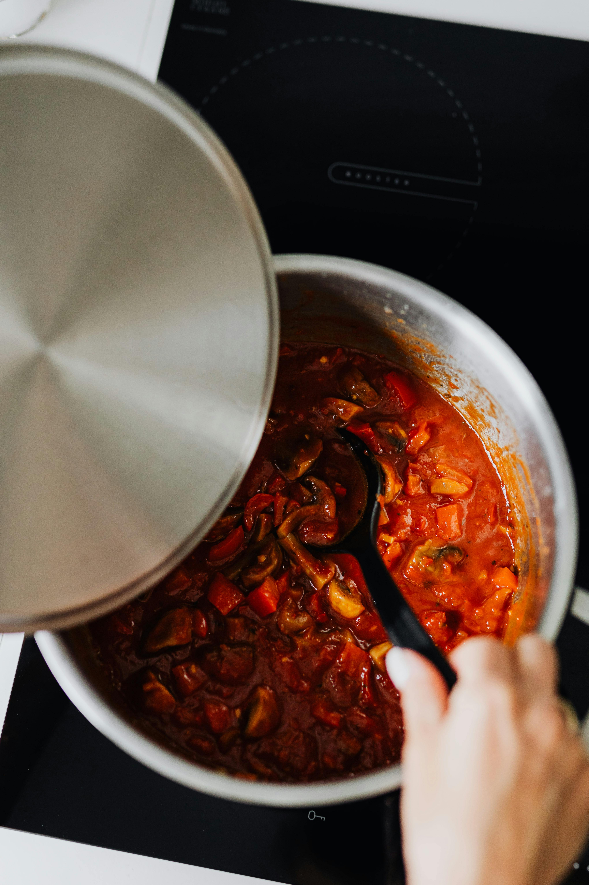

A csirkeragu egy sűrű, ízletes egytálétel, amelyben a puha csirkedarabokat zöldségekkel és egy ízletes mártással kombinálják. Könnyed, de mégis laktató fogás, amelyet gyorsan elkészíthetsz a mindennapokban. Kiválóan variálható különféle zöldségekkel és fűszerekkel, így minden alkalommal más és más ízvilágot érhetsz el. Tálalható rizzsel, tésztával vagy akár friss kenyérrel is.
Csirkeragu
Hozzávalók

- 500 g csirkemellfilé (vagy csirkecomb filé)
- 1 közepes fej vöröshagyma
- 2 gerezd fokhagyma
- 2 sárgarépa
- 1 közepes kaliforniai paprika
- 200 g gomba (opcionális)
- 1 evőkanál olívaolaj vagy vaj
- 1 evőkanál liszt (a sűrítéshez)
- 200 ml tejszín (vagy tejföl)
- 500 ml csirkealaplé
- 1 teáskanál mustár (opcionális, ízesítéshez)
- Só és bors ízlés szerint
- Friss petrezselyem a tálaláshoz
Elkészítés
Előkészítés:
A csirkemellet kockázd fel, a hagymát és fokhagymát aprítsd fel, a sárgarépát és paprikát vágd vékony csíkokra, a gombát pedig szeleteld.
Pirítás:
Hevítsd fel az olajat vagy vajat egy serpenyőben, majd pirítsd meg benne a csirkekockákat, amíg minden oldaluk szépen meg nem pirul. Tedd félre őket.
Zöldségek:
Ugyanabban a serpenyőben pirítsd meg a hagymát és a fokhagymát, majd add hozzá a sárgarépát, paprikát és gombát. Főzd pár percig, amíg a zöldségek kissé megpuhulnak.
Sűrítés:
Szórd meg a zöldségeket liszttel, és jól keverd el, majd öntsd fel az alaplével. Főzd közepes lángon, amíg a mártás besűrűsödik.
Krémesítés:
Add vissza a csirkét a serpenyőbe, öntsd hozzá a tejszínt (vagy tejfölt), és keverd bele a mustárt. Főzd további 10-15 percig, amíg a csirke teljesen meg nem puhul, és az ízek jól összeérnek.
Tálalás:
Sózd és borsozd ízlés szerint, majd friss petrezselyemmel megszórva tálald.
